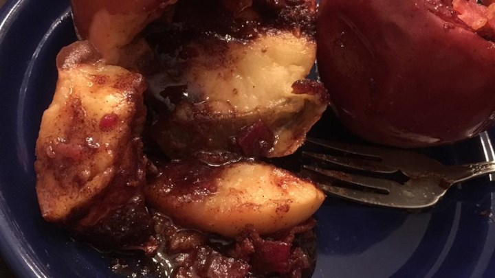

Bacon Apples

Ingredients
- 2 apples, cored
- 1/4 cup brown sugar
- 1 teaspoon ground cinnamon, or more to taste
- 4 slices cooked bacon, crumbled
Directions
- Build a campfire and allow the fire to burn until it has accumulated a bed of coals. Rake the coals into a flat bed on one side of the fire. Alternatively, preheat an outdoor grill.
- Place apples in a loaf pan. Combine brown sugar and cinnamon in a bowl; spoon into each apple.
- Place the loaf pan into the campfire or on the grill; cook for about 3 minutes. Carefully remove the pan from the fire and sprinkle bacon over apples. Place in the fire or on the grill for about 5 minutes more.
Visit the site where this recipe is from